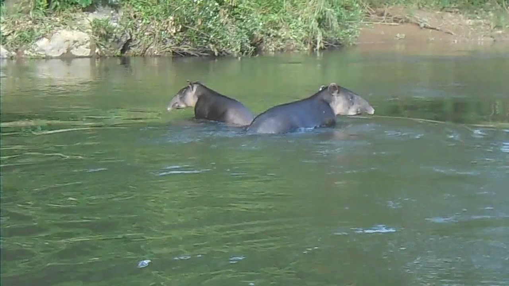

Página Principal
Animales en Honduras
Parque nacional la tigra
Biosfera del río Plátano
Biosfera del río Plátano
El río Plátano: Ea Reserva de la Biosfera de Río Plátano está localizada en los alrededores de río Plátano en La Mosquitia,
la región en la costa caribeña de Honduras. Tiene una extensión de 9,871 km² y abarca tanto montañas como tierras bajas de
selva tropical con una gran biodiversidad,
La reserva ha sido declarada Patrimonio de la Humanidad y Reserva de la Biosfera por la Unesco, en el año 1981.
Consta con más de la mitad de los mamíferos conocidos en Honduras, algunas especies mamíferos como lo son:
Monos Capuchinos, pecaríes, venados, Tapir o Danto, Perezosos, Oso hormiguero gigante, tigrillo o gato de monte, Jaguar,
Pantera negra, entre otros. Se repotaron 511 especies de ves como: tucán y Guacamayo rojo y Verde, Águila Harpía, Hocco major,
el águila crestada. Mamíferos acuáticos como Manatí. Hay cerca de 110 especies de reptiles y
anfibios como tortugas marinas como terrestres, pitones, anacondas entre otros.
